library(fdars)
#>
#> Attaching package: 'fdars'
#> The following objects are masked from 'package:stats':
#>
#> cov, decompose, deriv, median, sd, var
#> The following object is masked from 'package:base':
#>
#> norm
library(ggplot2)
theme_set(theme_minimal())Introduction
The fdars package provides comprehensive tools for
simulating functional data. This is useful for:
- Method validation: Testing statistical methods on data with known properties
- Power analysis: Determining sample sizes and effect sizes
- Teaching: Creating examples with controlled characteristics
- Benchmarking: Comparing algorithm performance
This vignette covers the Karhunen-Loeve simulation framework and related tools.
Karhunen-Loeve Simulation
The Karhunen-Loeve (KL) expansion represents a stochastic process as:
where: - is the mean function - are orthonormal eigenfunctions - are independent scores with variances
For simulation, we truncate to
terms and generate curves via simFunData().
Basic Example
# Define evaluation points
t <- seq(0, 1, length.out = 100)
# Simulate 20 curves with 5 basis functions
fd <- simFunData(n = 20, argvals = t, M = 5, seed = 42)
autoplot(fd) + labs(title = "Simulated Functional Data")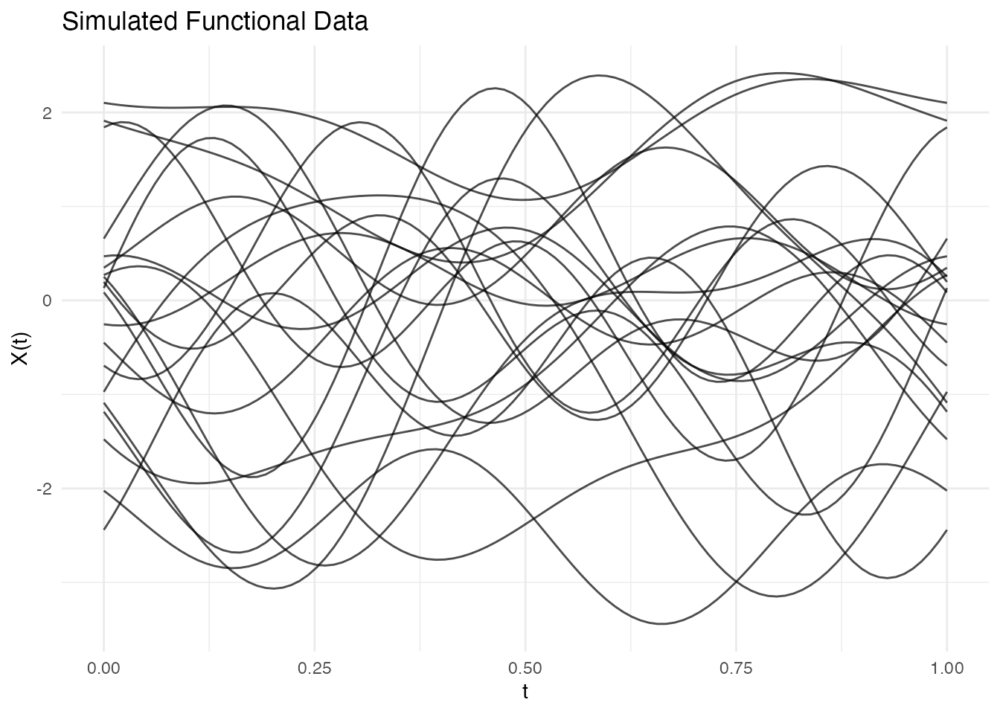
Reproducibility
Set a seed for reproducible results:
fd1 <- simFunData(n = 5, argvals = t, M = 5, seed = 123)
fd2 <- simFunData(n = 5, argvals = t, M = 5, seed = 123)
# Verify they're identical
all.equal(fd1$data, fd2$data)
#> [1] TRUEEigenfunction Bases
The shape of simulated curves depends on the eigenfunction basis. Use
eFun() to generate different types.
Fourier Basis
Best for periodic or smooth oscillating data:
phi_fourier <- eFun(t, M = 5, type = "Fourier")
phi_df <- data.frame(t = rep(t, 5),
phi = as.vector(phi_fourier),
k = factor(rep(1:5, each = length(t))))
ggplot(phi_df, aes(x = t, y = phi, color = k)) +
geom_line(linewidth = 1) +
labs(title = "Fourier Eigenfunctions", x = "t", y = expression(phi(t)), color = "k") +
theme_minimal()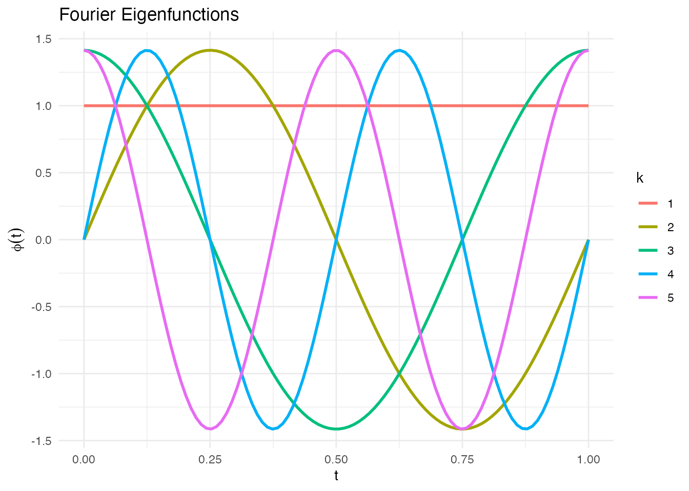
fd_fourier <- simFunData(n = 20, argvals = t, M = 5,
eFun.type = "Fourier", eVal.type = "exponential", seed = 42)
autoplot(fd_fourier) + labs(title = "Fourier Basis Simulation")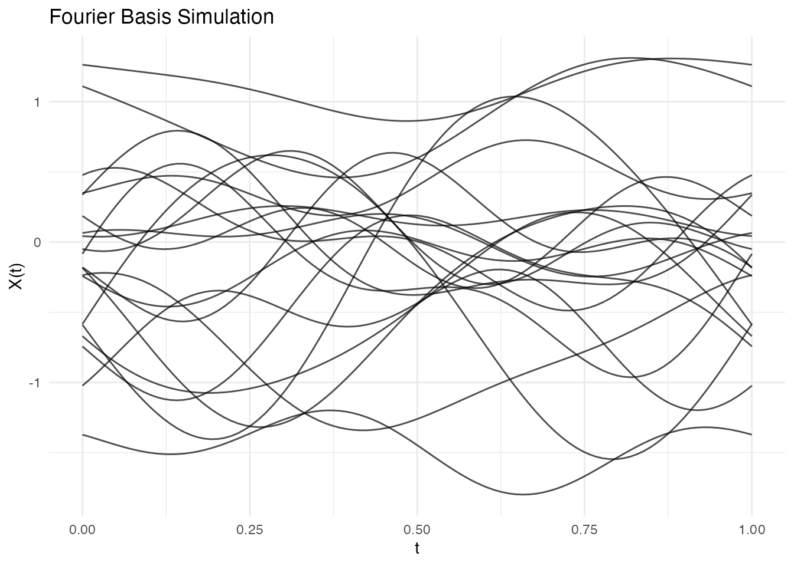
Legendre Polynomials
Orthogonal polynomials on [0, 1]:
phi_poly <- eFun(t, M = 5, type = "Poly")
phi_df <- data.frame(t = rep(t, 5),
phi = as.vector(phi_poly),
degree = factor(rep(0:4, each = length(t))))
ggplot(phi_df, aes(x = t, y = phi, color = degree)) +
geom_line(linewidth = 1) +
labs(title = "Legendre Polynomial Eigenfunctions", x = "t", y = expression(phi(t))) +
theme_minimal()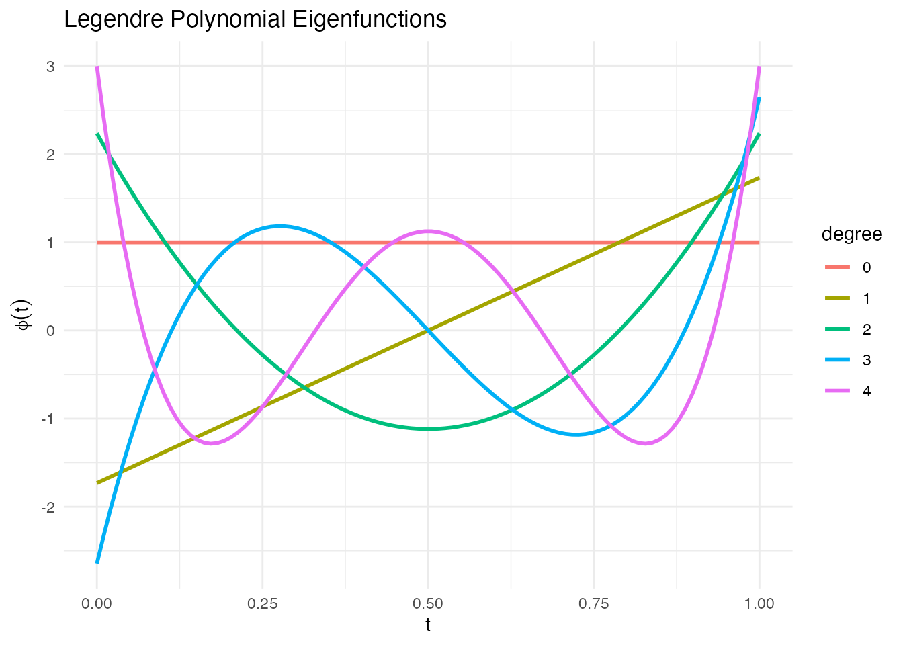
fd_poly <- simFunData(n = 20, argvals = t, M = 5,
eFun.type = "Poly", eVal.type = "exponential", seed = 42)
autoplot(fd_poly) + labs(title = "Polynomial Basis Simulation")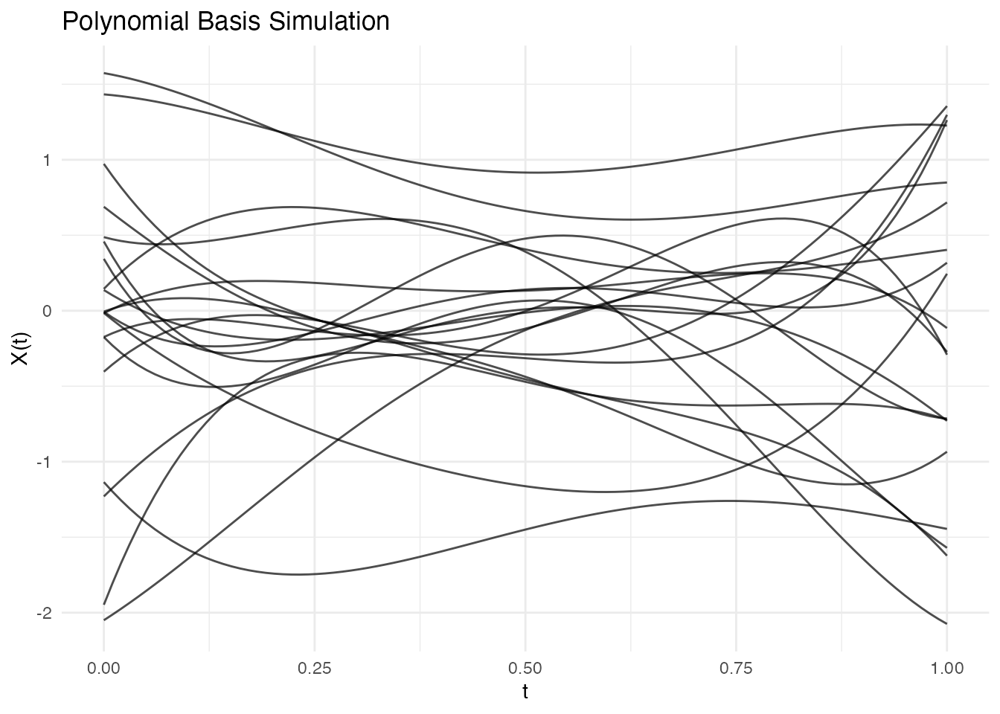
Wiener Process Eigenfunctions
Eigenfunctions of Brownian motion covariance :
phi_wiener <- eFun(t, M = 5, type = "Wiener")
phi_df <- data.frame(t = rep(t, 5),
phi = as.vector(phi_wiener),
k = factor(rep(1:5, each = length(t))))
ggplot(phi_df, aes(x = t, y = phi, color = k)) +
geom_line(linewidth = 1) +
labs(title = "Wiener Process Eigenfunctions", x = "t", y = expression(phi(t)), color = "k") +
theme_minimal()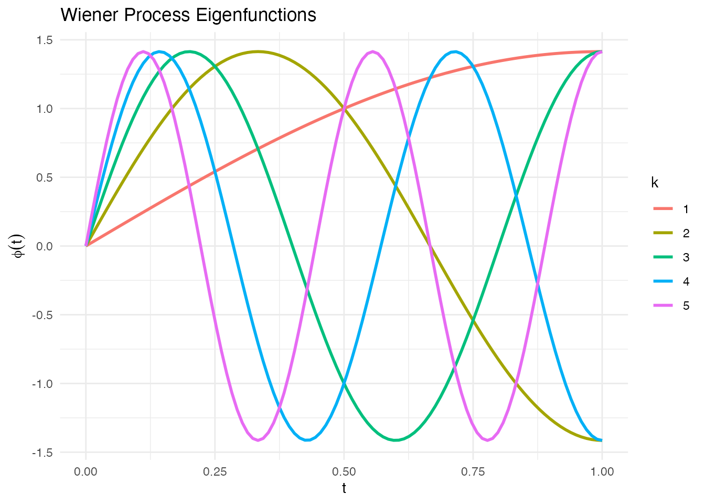
fd_wiener <- simFunData(n = 20, argvals = t, M = 10,
eFun.type = "Wiener", eVal.type = "wiener", seed = 42)
autoplot(fd_wiener) + labs(title = "Wiener Process Simulation")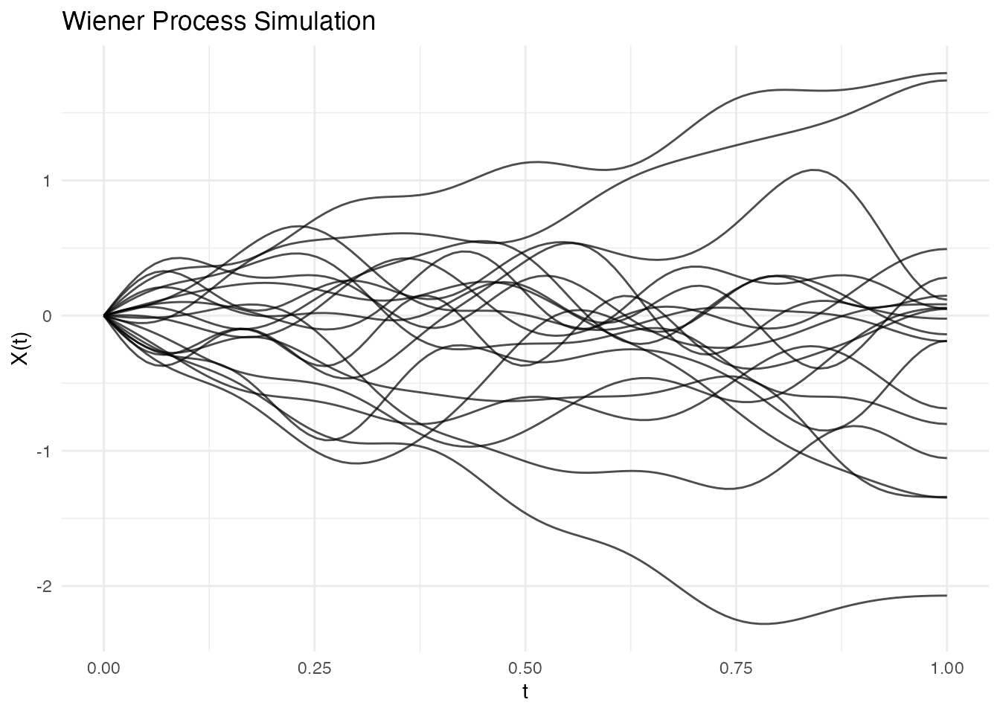
Eigenvalue Decay
The eigenvalue sequence controls how much each mode contributes to variance.
Comparing Decay Patterns
M <- 20
lambda_lin <- eVal(M, "linear") # lambda_k = 1/k
lambda_exp <- eVal(M, "exponential") # lambda_k = exp(-k)
lambda_wie <- eVal(M, "wiener") # lambda_k = 1/((k-0.5)*pi)^2
df_evals <- data.frame(
k = rep(1:M, 3),
lambda = c(lambda_lin, lambda_exp, lambda_wie),
type = rep(c("Linear", "Exponential", "Wiener"), each = M)
)
ggplot(df_evals, aes(x = k, y = lambda, color = type)) +
geom_line(linewidth = 1) +
geom_point() +
scale_y_log10() +
labs(title = "Eigenvalue Decay Patterns",
x = "Mode k", y = expression(lambda[k]),
color = "Decay Type") +
theme(legend.position = "right")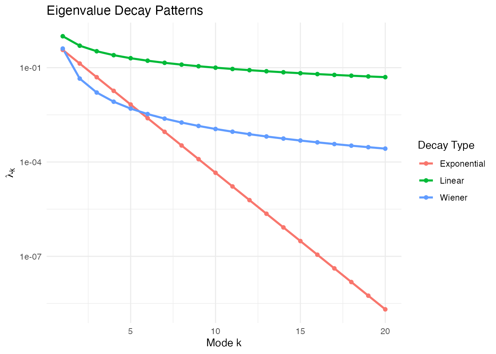
Effect on Curve Smoothness
Faster decay = smoother curves (higher modes contribute less):
# Linear decay - rougher curves
fd_lin <- simFunData(n = 10, argvals = t, M = 10,
eFun.type = "Fourier", eVal.type = "linear", seed = 42)
# Exponential decay - smoother curves
fd_exp <- simFunData(n = 10, argvals = t, M = 10,
eFun.type = "Fourier", eVal.type = "exponential", seed = 42)
p1 <- autoplot(fd_lin) + labs(title = "Linear Decay (Rougher)")
p2 <- autoplot(fd_exp) + labs(title = "Exponential Decay (Smoother)")
gridExtra::grid.arrange(p1, p2, ncol = 2)
Adding Mean Function
Simulate data with a specified mean:
# Define mean function
mean_fn <- function(t) 2 * sin(2 * pi * t) + t
# Simulate with mean
fd_mean <- simFunData(n = 30, argvals = t, M = 5, mean = mean_fn, seed = 42)
# Visualize with ggplot2
mean_df <- data.frame(t = t, mean = mean_fn(t))
autoplot(fd_mean) +
geom_line(data = mean_df, aes(x = t, y = mean), color = "red", linewidth = 1.5, inherit.aes = FALSE) +
labs(title = "Simulated Data with Sinusoidal Mean")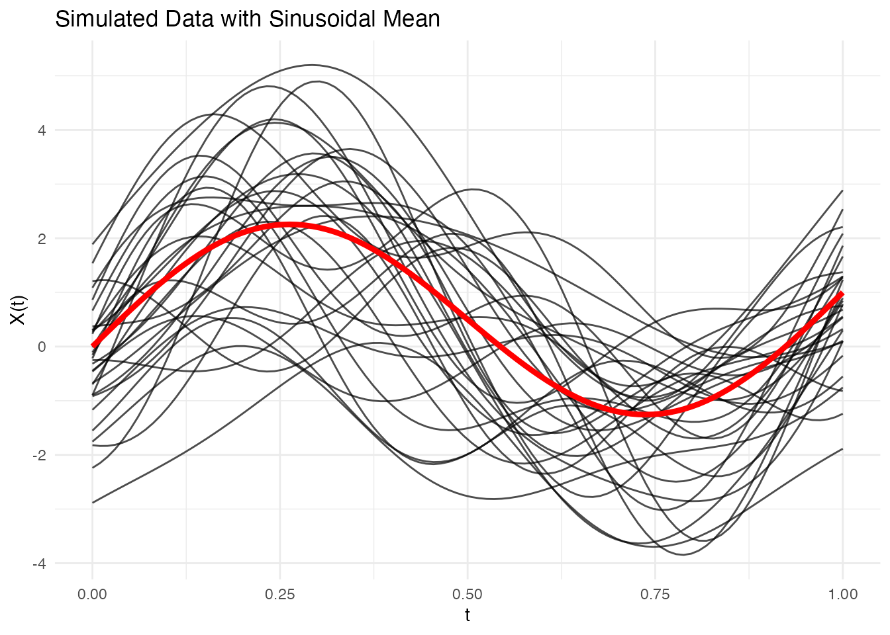
Adding Measurement Error
Use addError() to add noise to simulated (or real)
data:
fd_clean <- simFunData(n = 10, argvals = t, M = 5, seed = 42)
# Add different noise levels
fd_low <- addError(fd_clean, sd = 0.1, seed = 123)
fd_med <- addError(fd_clean, sd = 0.3, seed = 123)
fd_high <- addError(fd_clean, sd = 0.5, seed = 123)
p1 <- autoplot(fd_clean) + labs(title = "Clean Data")
p2 <- autoplot(fd_low) + labs(title = "Low Noise (sd = 0.1)")
p3 <- autoplot(fd_med) + labs(title = "Medium Noise (sd = 0.3)")
p4 <- autoplot(fd_high) + labs(title = "High Noise (sd = 0.5)")
gridExtra::grid.arrange(p1, p2, p3, p4, ncol = 2)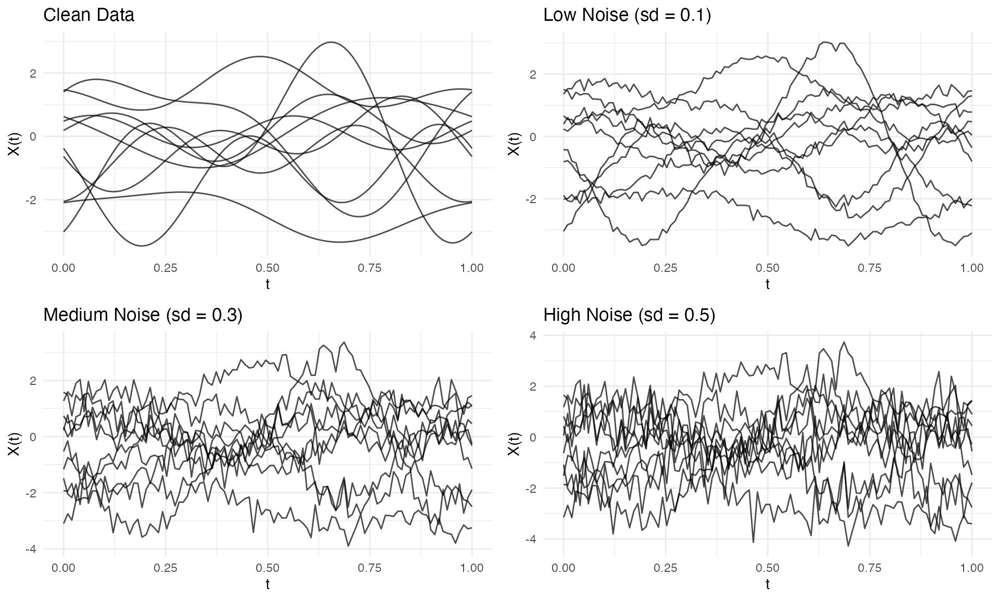
Creating Sparse/Irregular Data
Use sparsify() to simulate irregular sampling:
fd <- simFunData(n = 10, argvals = t, M = 5, seed = 42)
# Create sparse version
ifd <- sparsify(fd, minObs = 10, maxObs = 30, seed = 123)
print(ifd)
#> Irregular Functional Data Object
#> =================================
#> Number of observations: 10
#> Points per curve:
#> Min: 10
#> Median: 21.5
#> Max: 29
#> Total: 212
#> Domain: [ 0 , 1 ]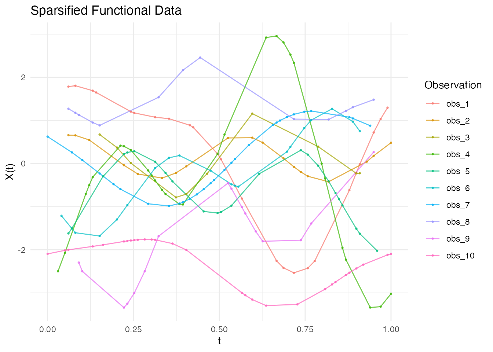
See the “Irregular Sampling” vignette for more details on working with sparse data.
Multivariate Functional Data
Simulate multiple correlated functional components:
t1 <- seq(0, 1, length.out = 100)
t2 <- seq(0, 0.5, length.out = 50)
mfd <- simMultiFunData(
n = 15,
argvals = list(t1, t2),
M = c(5, 3),
eFun.type = c("Fourier", "Wiener"),
eVal.type = c("exponential", "linear"),
seed = 42
)
print(mfd)
#> Multivariate Functional Data Object
#> ===================================
#> Number of observations: 15
#> Number of components: 2
#>
#> Component 1 :
#> Evaluation points: 100
#> Domain: [ 0 , 1 ]
#> Component 2 :
#> Evaluation points: 50
#> Domain: [ 0 , 0.5 ]
p1 <- autoplot(mfd$components[[1]]) + labs(title = "Component 1 (Fourier)")
p2 <- autoplot(mfd$components[[2]]) + labs(title = "Component 2 (Wiener)")
gridExtra::grid.arrange(p1, p2, ncol = 2)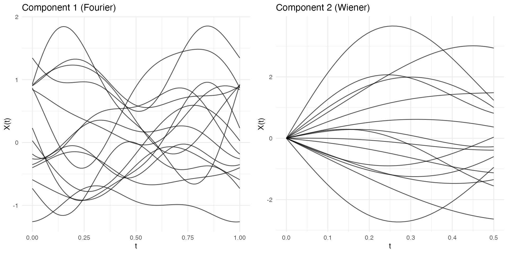
Comparison with GP Simulation
The package also offers Gaussian Process simulation via
make.gaussian.process():
| Aspect | KL (simFunData) |
GP (make.gaussian.process) |
|---|---|---|
| Control | Eigenfunctions, eigenvalues | Covariance kernel |
| Interpretation | Modal decomposition | Correlation structure |
| Best for | Known FPCA structure | Known covariance kernel |
| Computation | O(nM) per curve | O(m³) for Cholesky |
# KL simulation
fd_kl <- simFunData(n = 10, argvals = t, M = 10,
eFun.type = "Wiener", eVal.type = "wiener", seed = 42)
# GP simulation with Brownian motion kernel
set.seed(42)
fd_gp <- make.gaussian.process(n = 10, t = t,
cov = kernel.brownian())
p1 <- autoplot(fd_kl) + labs(title = "KL Simulation (Wiener)")
p2 <- autoplot(fd_gp) + labs(title = "GP Simulation (Brownian Kernel)")
gridExtra::grid.arrange(p1, p2, ncol = 2)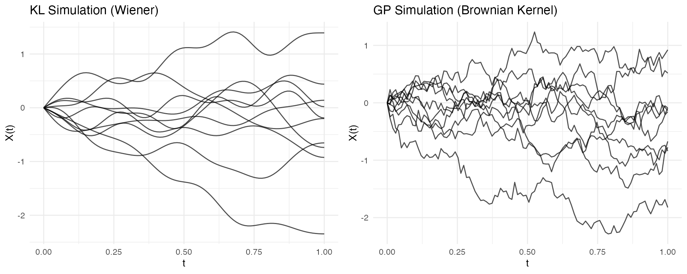
Complete Simulation Recipe
Here’s a complete workflow for power analysis:
set.seed(42)
# 1. Simulate two groups with different means
n_per_group <- 30
t <- seq(0, 1, length.out = 100)
mean_group1 <- function(t) sin(2 * pi * t)
mean_group2 <- function(t) sin(2 * pi * t) + 0.5 * cos(4 * pi * t)
group1 <- simFunData(n = n_per_group, argvals = t, M = 5, mean = mean_group1)
group2 <- simFunData(n = n_per_group, argvals = t, M = 5, mean = mean_group2)
# 2. Add measurement noise
group1 <- addError(group1, sd = 0.2)
group2 <- addError(group2, sd = 0.2)
# 3. Visualize with ggplot2
mean_df1 <- data.frame(t = t, mean = mean_group1(t))
mean_df2 <- data.frame(t = t, mean = mean_group2(t))
p1 <- autoplot(group1, alpha = 0.5) +
geom_line(data = mean_df1, aes(x = t, y = mean), color = "blue", linewidth = 1.5, inherit.aes = FALSE) +
labs(title = "Group 1")
p2 <- autoplot(group2, alpha = 0.5) +
geom_line(data = mean_df2, aes(x = t, y = mean), color = "red", linewidth = 1.5, inherit.aes = FALSE) +
labs(title = "Group 2")
# Side-by-side plots
gridExtra::grid.arrange(p1, p2, ncol = 2)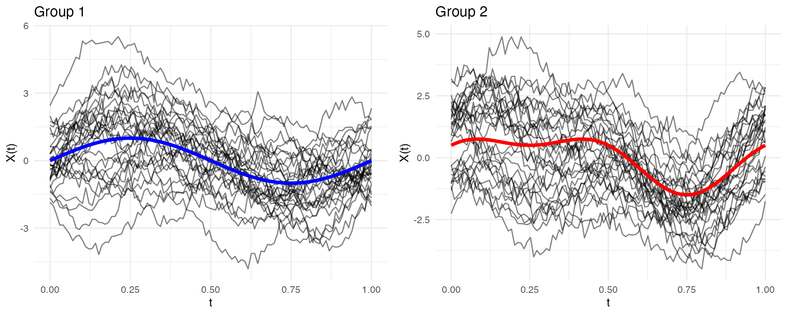
Summary
| Function | Purpose |
|---|---|
simFunData() |
KL simulation with specified eigenfunctions/eigenvalues |
simMultiFunData() |
Multivariate functional data simulation |
eFun() |
Generate eigenfunction bases (Fourier, Poly, Wiener) |
eVal() |
Generate eigenvalue sequences (linear, exponential, wiener) |
addError() |
Add Gaussian noise (pointwise or curve-level) |
sparsify() |
Create irregular/sparse data from regular |
make.gaussian.process() |
GP simulation with covariance kernels |
r.brownian(), r.ou(),
r.bridge()
|
Specific random process generators |